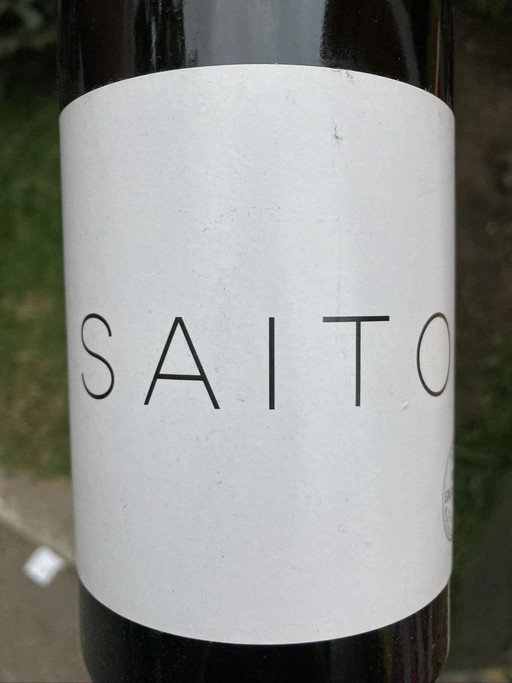

- Type
- White Still, Dry
- Producer
- Weingut Edgar Brutler
- Vintage
- 2018
- Location
- România, Vin (din România)
- Grapes
- Field Blend
- Alcohol
- 11.5
- Sugar
- 1
- Price
- 607 UAH, 690 UAH
- Cellar
- N/A
Ratings
2020-09-18 - 7.00
Good skin contact wine from Satu Mare, Romania. Fermenting yellow fruits, dried flowers, juniper, yeast. Tastes like oxidized green apple, same acidity and tannins. And if that matter, flavours.
2022-08-10 - 6.00
That case when the photo of the wine is better than the wine itself. Ok, maybe I am exaggerating. A bit. But I genuinely find it hard to enjoy the wine that tastes like rotten fruits that started to ferment. Why is it still dizzy? On the other hand, the bouquet is quite pleasant - ripe stone fruits, overly oxidized apples, and even apricots and nuts. But it lacks balance. This wine is tired. The experience is shallow. It was better 2 years ago.